Görsel künyeleri
Sitedeki ders görselleri Wikimedia Commons’tan, belirtilen açık lisanslarla kullanılmıştır. Görseller kırpılarak yeniden boyutlandırılmıştır.
- TÜBİTAK logo
TÜBİTAK · Public domain · Wikimedia Commons
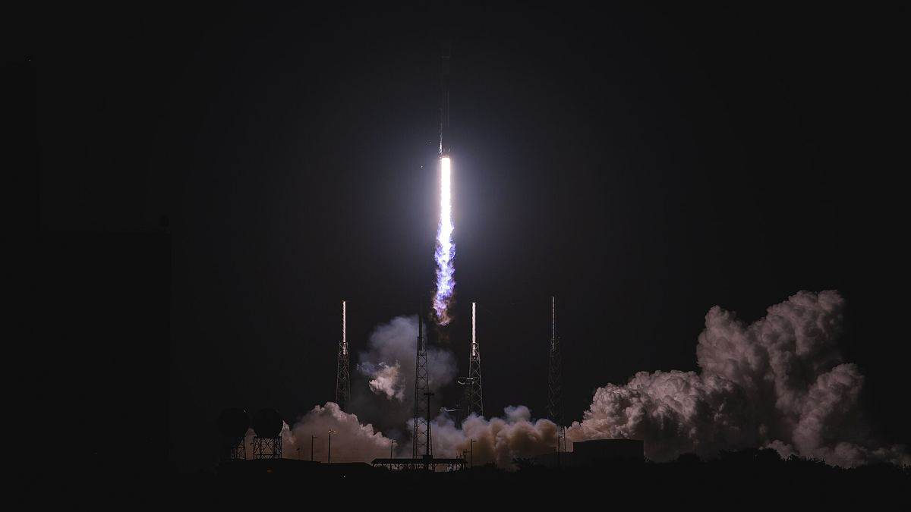
45th Space Wing Successfully Supports Türksat 5A Launch (210107-F-KD758-1004)U.S. Space Force photo by Joshua Conti · Public domain · Wikimedia Commons
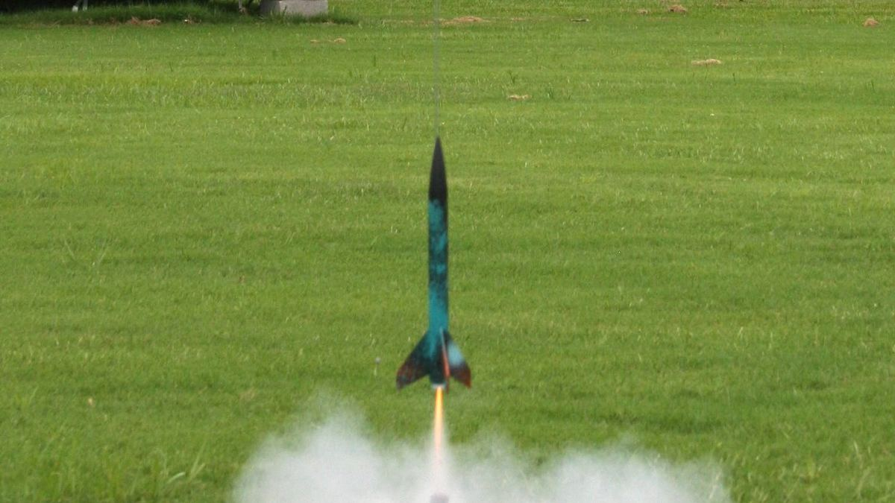
Model rocket launch (Starwiz)Justin Lebar · CC BY 2.5 · Wikimedia Commons
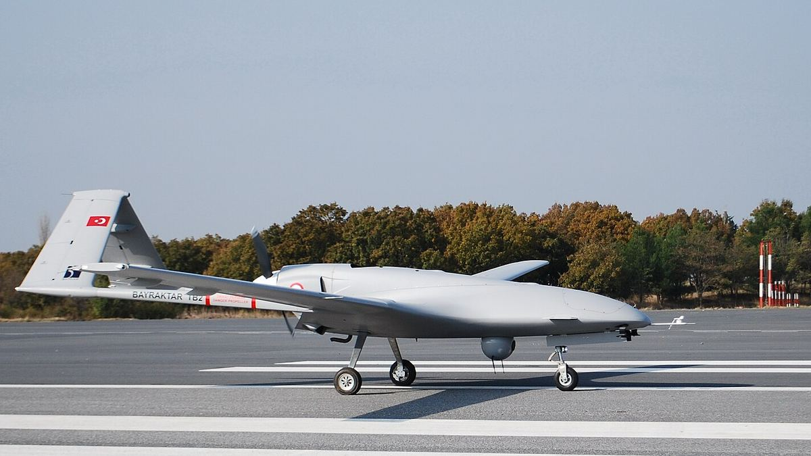
Bayraktar TB2 RunwayBayhaluk · CC BY-SA 4.0 · Wikimedia Commons
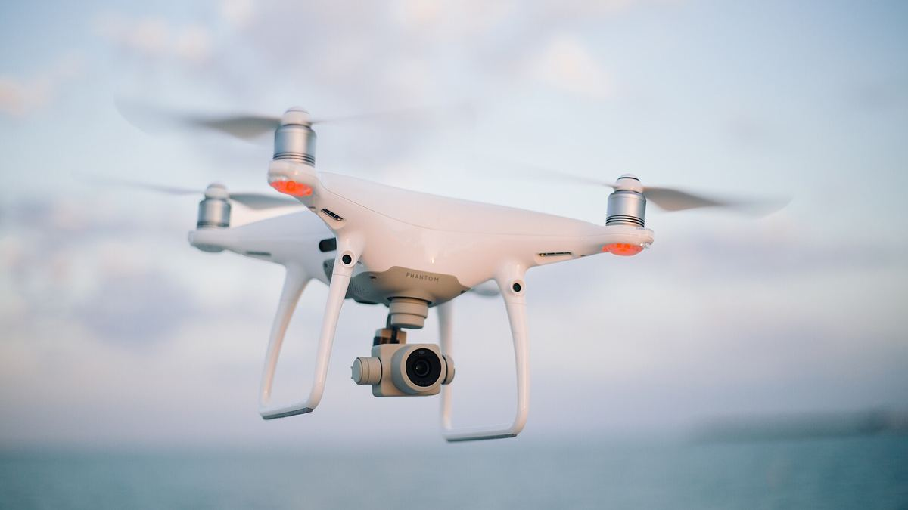
Quadcopter camera drone in flightJosh Sorenson · CC0 · Wikimedia Commons
- Artificial Neural Network with Chip
mikemacmarketing / photo on flickr · CC BY 2.0 · Wikimedia Commons
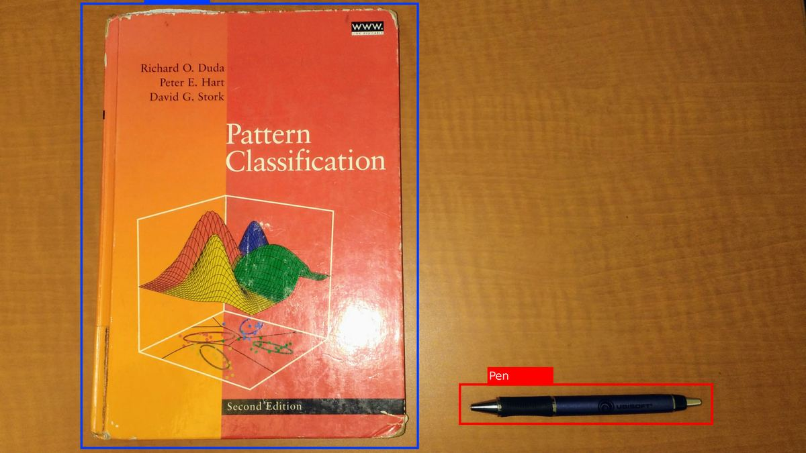
ObjectDetectionExampleHughesperreault · CC BY-SA 4.0 · Wikimedia Commons
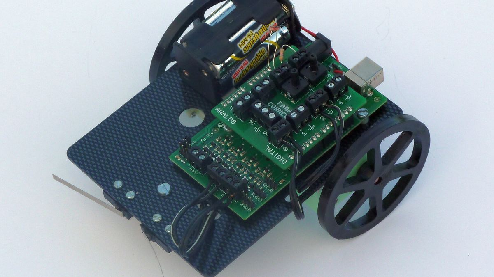
Faraduino buggyAndy Dingley · CC BY-SA 3.0 · Wikimedia Commons
- Macro laptop coding (Unsplash)
Marc Mueller seven11nash · CC0 · Wikimedia Commons
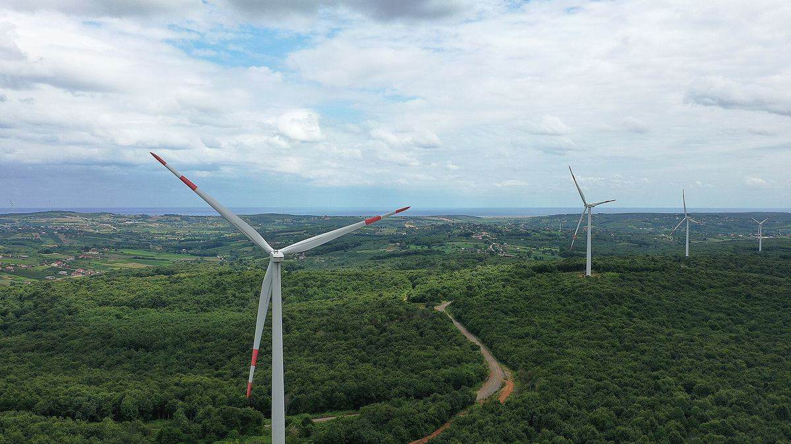
Babalı Wind Farm, Kocaeli, TurkeyŞadi Akdoğan · CC BY 2.0 · Wikimedia Commons
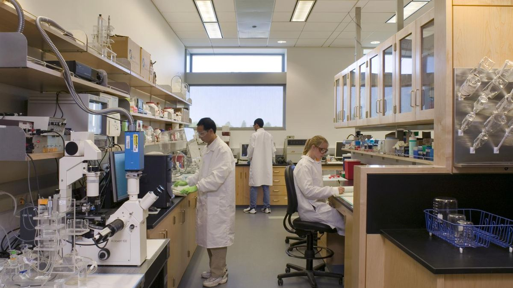
Biomedical Engineering LaboratoryUC Davis College of Engineering · CC BY 2.0 · Wikimedia Commons
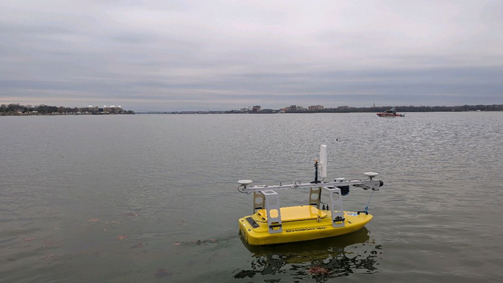
NOAA unmanned surface vehicle debris search Potomac River 2025John Gray/NOAA · Public domain · Wikimedia Commons
- Togg T10X IAA 2025 DSC 1522 (cropped)
Alexander Migl · CC BY-SA 4.0 · Wikimedia Commons
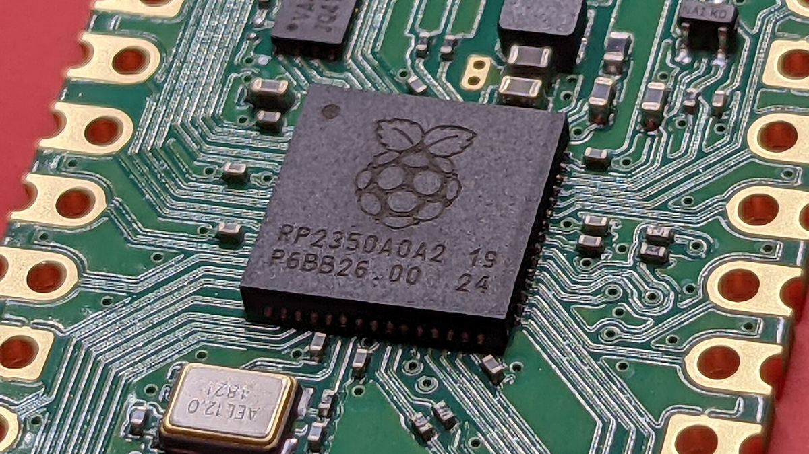
Macro photograph of the RP2350 microcontroller on a Raspberry Pi Pico 2 boardProfpcde · CC0 · Wikimedia Commons
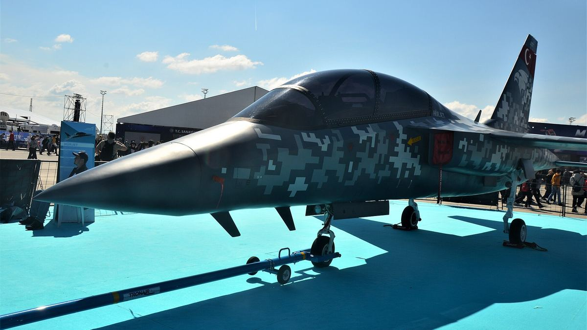
TAI Hürjet Teknofest2021 (4)CeeGee · CC BY-SA 4.0 · Wikimedia Commons
- Homeschool students compete in science fair (5130163)
U.S. Air Force photo by Senior Airman Lexie West · Public domain · Wikimedia Commons